GCSE Maths support that builds confidence & improves results
Real parent feedback, genuine lesson examples and the system I use to help GCSE students make consistent progress.
Choosing the right tutor can be difficult. Rather than making big promises, I'd rather show you exactly how I work, what parents have said, and the systems I use to help GCSE students make steady, measurable progress.
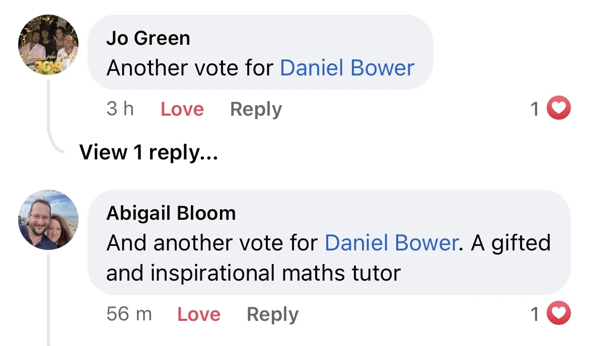
About Daniel
Hi, I'm Daniel.
I've been tutoring GCSE Maths for over seven years and have a degree in Mathematical Physics from the University of Nottingham.
Alongside tutoring, I'm a professional magician (you can see more at bowermagic.co.uk). Performing professionally has taught me how to hold people's attention, explain ideas clearly and adapt the way I communicate to different personalities — exactly the same skills I use when teaching GCSE Maths.
Before becoming self-employed, I worked as a Data and Cloud Engineer, where logical thinking and problem solving were part of my everyday work. I enjoy showing students how the maths they're learning connects to real careers in technology and beyond.
My goal is simple: to help students build confidence, understand the "why" behind the maths, and leave each lesson feeling more capable than when they arrived.
- 7+years GCSE tutoring
- BScMathematical Physics
- Properformer & communicator
- EngData & Cloud background
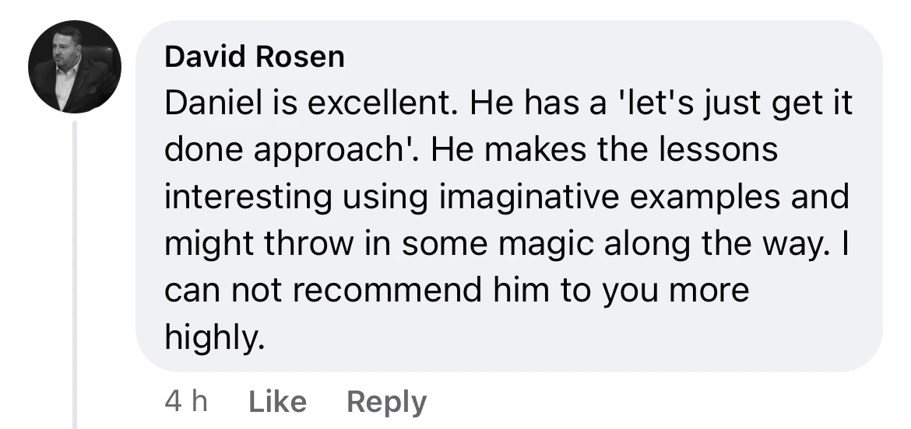
How it works
A simple system built for steady progress
Designed to build confidence and improve results, every week.
-
1
Initial Assessment
The first lesson is used to understand your child's current level, identify knowledge gaps and agree realistic goals. We'll usually look through recent school work, a test or topics they are finding difficult.
-
2
Weekly 1:1 Lessons
Each lesson focuses on the areas that will make the biggest difference, whether that's understanding difficult topics, improving exam technique or preparing for upcoming tests.
-
3
Support Between Lessons
Students can message in our WhatsApp group if they get stuck on homework or revision, so they don't have to wait until the next lesson.
-
4
Structured Revision
Students receive access to a GCSE revision tracker with past papers, mark schemes and progress tracking, helping them revise in a clear and organised way.
-
5
Parent Visibility
Parents can clearly see what has been covered, how their child is progressing and what we'll be focusing on next.
-
6
Greater Confidence and Better GCSE Results
Every part of the system is designed to make revision less overwhelming and help students make steady progress throughout the year.
What parents say
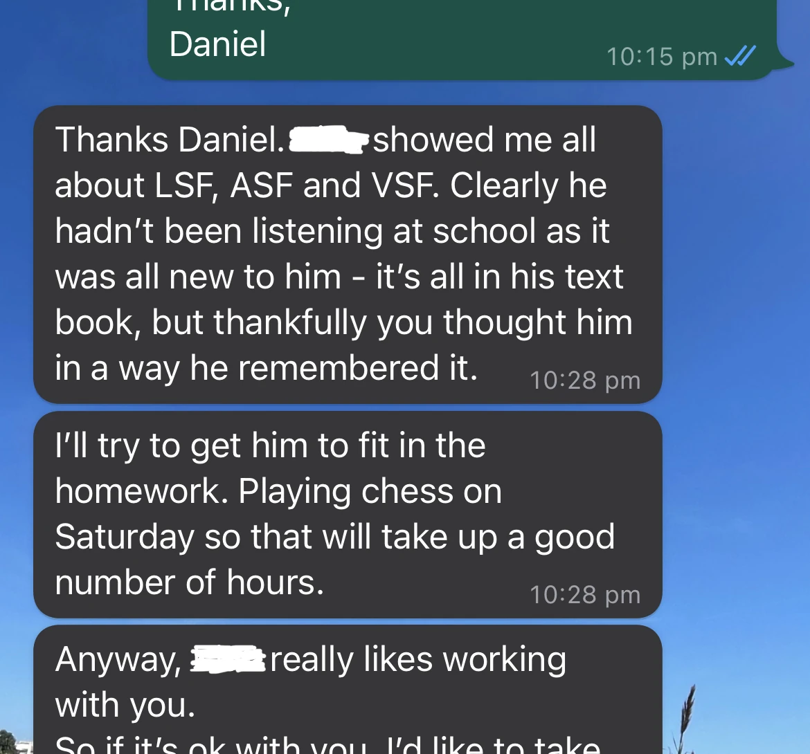
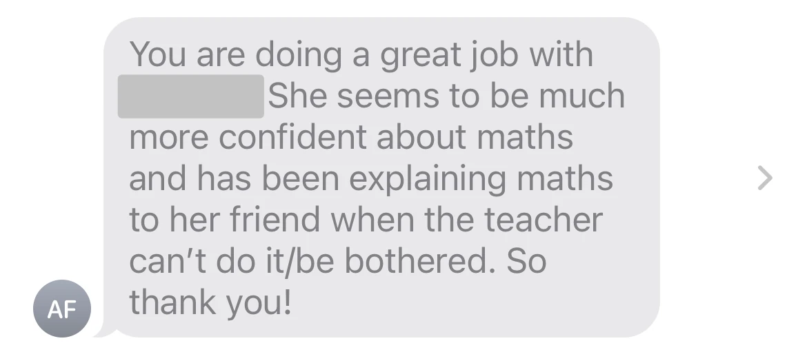
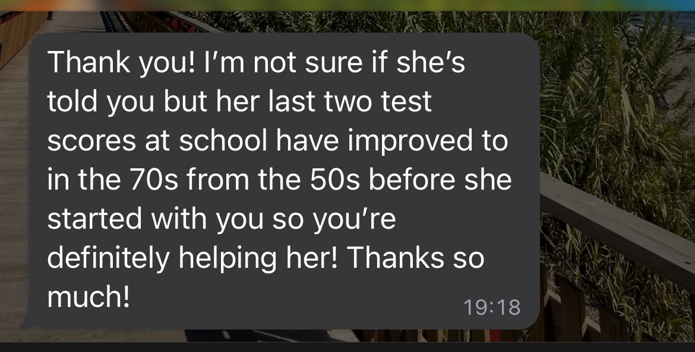
Everything included
The weekly lesson is only one part of the support.
Every student also receives the following throughout the year:
- A focused 1:1 lesson built around current school work, tests, weak topics and target grades.
- Support between lessons via WhatsApp when a student gets stuck.
- A GCSE past paper tracker with direct links to papers, mark schemes and score tracking.
- Online lessons can be rewatched for up to 6 months, making revision easier before tests.
- Flexible online booking for extra sessions or rearrangements.
- Parents always know how things are going, without needing to guess whether lessons are making a difference.
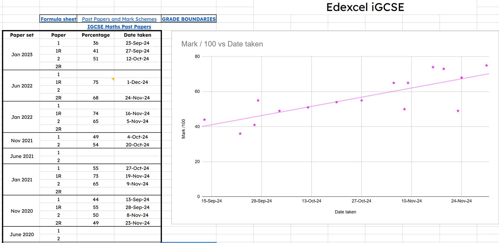
Progress is tracked over time so lessons can respond to the exact topics and question types costing the student marks.
Real results
Real examples of student progress
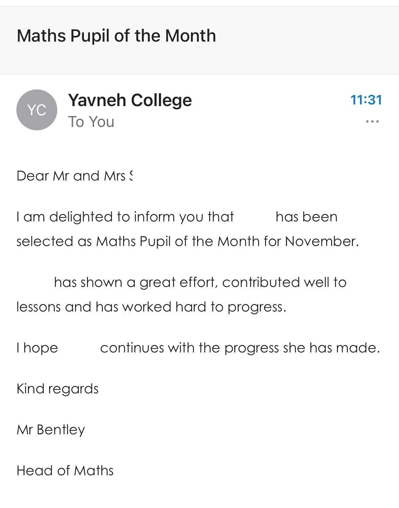
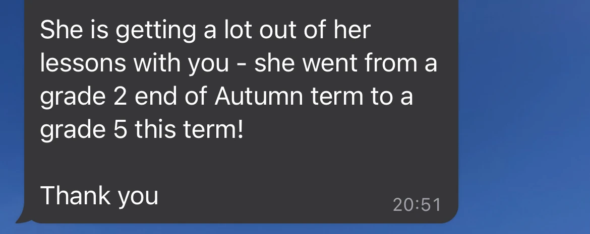
Inside a lesson
A genuine look at online lessons
Parents are often surprised by how interactive online lessons are. Both the student and I write on the screen together, difficult questions are broken into manageable steps, and lessons feel much closer to sitting side by side than watching someone talk on Zoom.
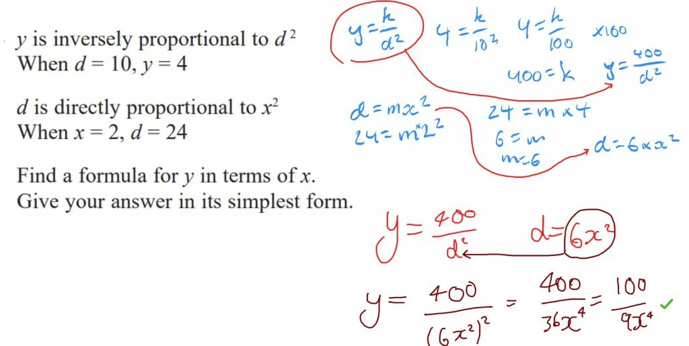
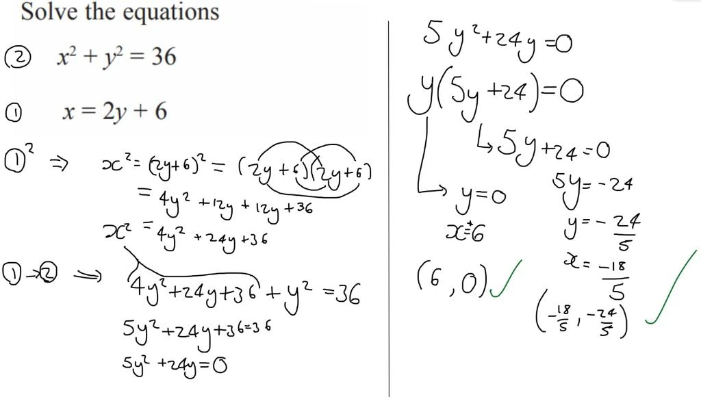
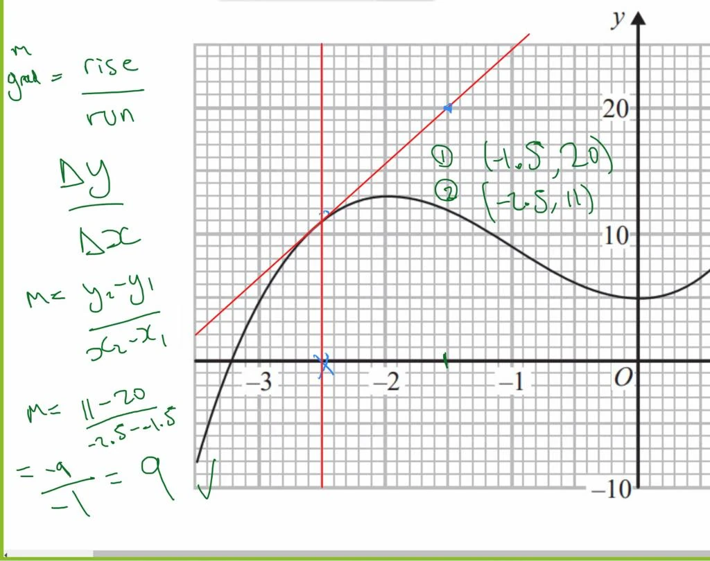
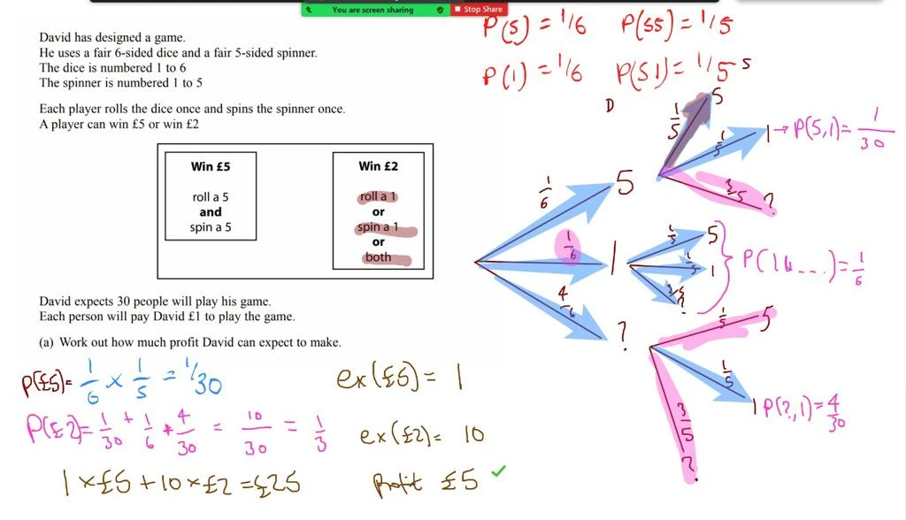
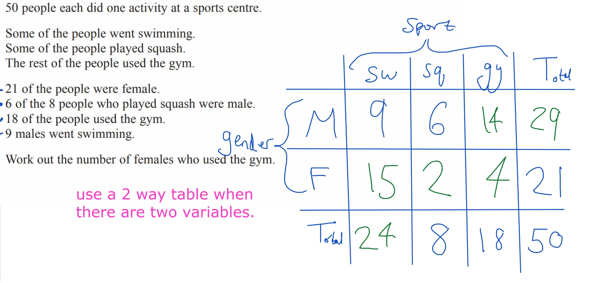
Every online lesson is recorded and accessible for 6 months, making it easy to revisit topics before exams.
Getting started
The first lesson
The first lesson is about understanding where the student is now, not jumping straight into teaching.
We'll normally look through recent school work or a test, identify the biggest gaps, and make a plan for the weeks ahead.
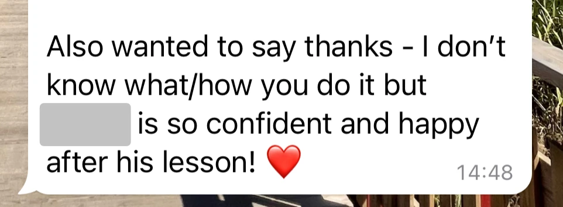
Get started
Ready to get started?
If you'd like to see whether we're a good fit, the easiest next step is to book an initial lesson or a quick chat.
Book directly at cal.com/bower/maths
Enhanced DBS checked. Online and in person support available.